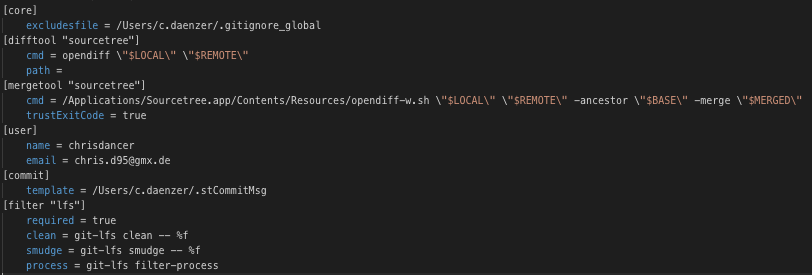
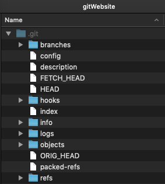

Mit dem git config Befehl werden Werte für die Konfiguration gesetzt, in dem im .gitconfig Ordner die Konfigurations-Textdateien angepasst werden. Die Konfigurationsnamen sind bestehen aus der "section" und dem "key" und sind durch einen Punkt voneinandergetrennt: user.email user.name Zusätzlich können noch Argumente mitgegeben werden. --local (die Werte werden in einer Datei im Repository abgelegt) --global (die Werte beziehen sich auf den Benutzer des Betriebssystems) --system (die Werte werden auf den kompletten Rechner angewendet > alle Benutzer des Betriebssystems und alle Repositories) Priotität: local > global > system (git sucht erst lokal nach config-Werten und erst zum Schluss auf System-Ebene) Auf dem Bild ist eine config-Datei zu sehen, die in einem Benutzer-Ordner liegt und deren Parameter zeigt.
Mit git init wird ein neues Repository erstellt. Der Befehl kann dazu verwendet werden, ein existierendes Projekt in ein Repository zu wandeln, oder ein neues, leeres Repository anzulegen. Da die meisten anderen Git-Befehle nicht zugänglich sind, solange das Repository nicht initialisiert wurde, ist es meist der erste Command. Im Hintergrund wird ein .git-Ordner erstellt, dass alle nötigen Metadaten enthält und eine HEAD-Datei wird angelegt, die auf den aktuellen Commit hinweist. Auf dem Bild ist ein .git-Ordner abgebildet, der nach dem git init-Befehl erstellt wird.
Branches sind eine Art Verzeigung und werden auch Versionszweige genannt. Sie werden benutzt damit mehrere Personen gleichzeitig an einem Projekt arbeiten können. Dadrch können zwei verschiedene Probleme, Funktionen oder sonstige Inhalte in einem Projekt parallel gefixt oder bearbeitet werden. Beim Erstellen eines neuen Repositories entsteht als Standard der „master“ Branch. Mit dem Befehl „git branch [branchname]“ kann ein neuer Branch erstellt werden. Wenn die Arbeit auf einem Branch erledigt wurde, kann dieser durch mergen wieder mit dem „master“ zusammengeführt werden. Anschließend kann der Branch mit dem Befehl „git branch –d [branchname]“ wieder gelöscht werden. Mit dem Befehl „git branch –a“ können alle Branches aufgelistet werden. Wenn nur die lokalen Branches aufgelistet werden sollen, kann da „-a“ weggelassen werden.
Durch den Befehl „git checkout [branchname]“ kann zwischen den einzelnen Verzweigungen hin und her gewechselt werden. So kann der Branch angesprochen werden, auf dem man selbst arbeitet. Git ändert hier bei einem checkout die Quelldatei. Das Ganze funktioniert im Normalfall aber nur, wenn der Branch bereits commited wurde oder nichts darin verändert wurde. Für das Erstellen eines Branches und das Auschecken dieses gibt es folgenden Befehl, der beides auf einmal macht: „git checkout –b [branchname]“.
Dieser Befehl wird benötigt, um Änderungen im lokalen Repository an ein entferntes Repository zu übermitteln. Dabei werden die Daten an einen Host übertragen (z.B. GitHub) und andere können diese nun klonen. Bei manueller Eingabe folgen nach git push noch die Parameter „remote_name“ und „branch_name“.
Wenn du die aktuellsten Änderungen empfangen möchtest und direkt in deine lokale Kopie speichern willst, nutze diesen Befehl. Er bildet sozusagen eine Mischung aus den Befehlen git fetch und git merge. Solltest du keinen merge wollen, kannst du auch git pull --rebase eingeben. Für genauere Informationen, was gedownloadet und gemerged wird, verwende git pull --verbose. Anschließend kannst du mit den neusten Dateiversionen arbeiten.